Les Gentils Organisateurs Jean-Claude et Josette (et toute l'Equipe des Toiles du Vent) se donnent un mal fou pour faire plaisir.
Les Gentils Organisateurs Jean-Claude et Josette (et toute l'Equipe des Toiles du Vent) se donnent un mal fou pour faire plaisir.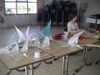
Jean-Claude a plié et colorié à l'aérographe des dizaines d'oiseaux de toutes les tailles.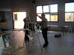
Ensuite, on construit les mobiles qui les feront voler...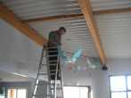
Puis on accroche le tout au plafond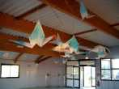
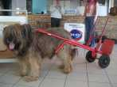
Tout le monde met la main à la pâte. Logos donne un sérieux coup de collier aussi...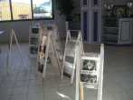
La collection de photos de cerfs-volants anciens du CVCF est exposée aussi dans la salle sur des supports maison.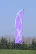
Finalement on passe quand même à l'extérieur où la bannière des "Toiles Du Vent" a pris fièrement place sur la butte.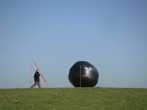
Joël commence à y planter, pour ses moulinets musicaux. Au fond, le ballon solaire de Jean-Claude a déjà bien décollé derrière la butte.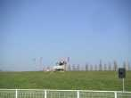
Les premiers moulinets, sortis de la remorque spéciale Joël, commencent à prendre place sur leurs hampes. Il a même créé, cette année, un moulin à eau qui retournera plus tard un sablier grâce à un mécanisme d'une ingéniosité digne de Léonard.Tiens, le ballon devrait être là ?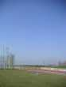
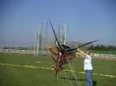
Il y a quand même des moments où le vent est faible, pour ne pas dire plus. Enfin, c'est quand même bien préférable à l'année dernière où on faisait plus de la survie que du cerf-volant ! Gaelle veut quand même voler à tout prix avec ce très coloré dérivé de Rolloplan.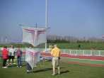
Plus loin, on bride (ou on démêle les ficelles ?) pour ce croisé de Roller et de Rolloplan très modifié et "graphique".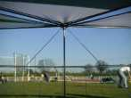
Pour les roues, elles sont posées sagement bien à plat sur le sol. Ici, vous avez bien sûr reconnu une de celles de Hugo...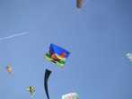
Mais ça se relève, place aux oiseaux. Le coq magnifiquement coloré de Pascal soutient notre honneur national.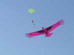
Mon Condor vole pour la deuxième fois, à peine modifié. Il promet beaucoup, mais c'est un peu une usine à gaz, je vous en reparlerai...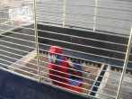
La perruche de Joël voudrait bien rejoindre ses copains, elle est un peu jalouse !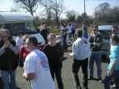
Mais Joël, lui arrose son camping-car tout neuf de la veille, avec salle de billard, piscine et sous-sol pour ranger les moulinets...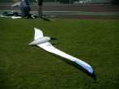
Et voilà mon Albatros ? Pas du tout, c'est celui de Jacques, de Vierzon.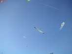
Alors, le voilà ? Ah non, encore perdu, c'est celui de Jean-Marc... Le mien, comme le noir et rouge des Mouchague, volera le lendemain.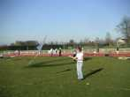
Anaelle est en train de prendre en main son papillon pilotable façon combattant (design Didier Ferment)...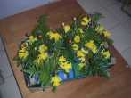
Le soir repas dans la salle du stade. Les tables portent de splendides garnitures mariant feuillages, jonquilles (c'est le printemps), et oeufs de Pâques.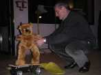
Jean-Claude a inventé le cervoliste-nounours-robot, monté sur son skate. Il semble qu'il ait même des possibilités de bouger le bras, mais je n'ai pas vu.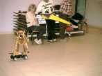
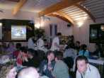
La salle est bien installée, avec sono, projecteur de photos, les mobiles-oiseaux au plafond et la joyeuse ambiance.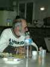
Gaby a quitté le mini-short pour mettre son pull-over du dimanche.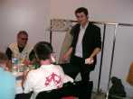
Un illusionniste (les fidèles l'auront reconnu) avec des tours toujours bluffants, faits juste sous votre nez. Il anime aussi des tours sur estrade (improvisée), j'ai fait Lucky Luke (mal, mais j'ai gagné un sac à dos avec nécessaire à picnics)...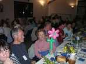
L'illusionniste fait aussi des tours avec des petits ballons. Bernadette a reçu une fleur, et quelle fleur !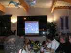
Le projecteur égrène des photos du jour, ou plus anciennes comme le grand show de dragons chinois ou autres de Tours.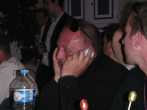
Mais Michel est plongé dans son téléphone...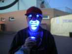
Il fait beau, on va improviser un vol de nuit à la lueur des projecteurs du stade. Christian Bécot a amené une lampe à diodes bleues qui permet des portraits saisissants !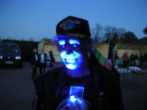
La manière de tenir la lampe est évidemment très importante pour l'impression finale !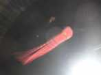
Vol de nuit, pas beaucoup de vent, mais on arrive quand même à tenir en l'air et une grande pieuvre vient occuper une bonne part du terrain en agitant frénétiquement (à l'échelle du temps de pose) ses tentacules !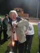
Bernard monte progressivement son train de bouteilles à bougie. Pourquoi faire compliqué quand on peut faire simple ?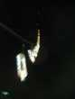
Le train se balance dans la nuit, pas facile pour le photographe !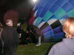
Le vent étant assez calme, Michel Gressier va nous faire voler sa plus grande mini-montgolfière sur le terrain. Le plus dur est le gonflage, mais il a un mini ventilateur adapté à ça.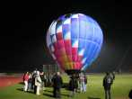
Ca y est, la bête bien chauffée se redresse. Apparemment le grand danger est le téléphone portable qui allume intempestivement les brûleurs !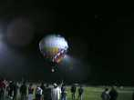
Et elle décolle, il faut même la garder en laisse !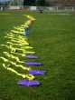
La nuit a été bonne, merci, ce matin, il fait encore grand beau. Le train de coccinelles est sorti et attend un souffle suffisant.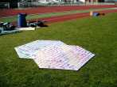
Les derniers Rokkakus d'Audrey et Hugo, très esthétiques et à la finition exemplaire, attendent aussi !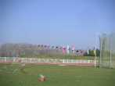
Mais l'arche a déjà quitté le sol, même si elle n'est pas encore très fournie !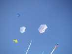
Ca y est, les rokkakus ont pris leur vol, leurs mèches s'agitent dans le vent.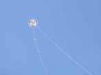
Un cerf-volant guatémaltèque au triskel celtique (de Yannick ?) montre sa stabilité.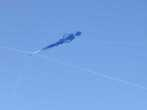
Et Thérèse fait voler sa marinette, qu'on voit moins souvent que son petit compagnon marin.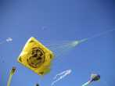
Splendide dessin et splendide jaune pour ce gonflable. Malheureusement trop de quilles pour bien le voir, il faut être en face !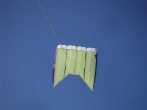
Le grand Flow-form de l'Antenne de Beauce, au dessin très pur, et sans trous du tout.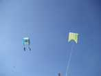
Il a trouvé un compagnon, celui de Claude.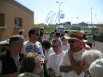
Midi arrive vite ! il va falloir passer à table, toujours dans la grande salle du stade.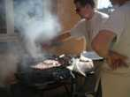
Le barbecue produit les tranches de porc et les saucisses à une cadence infernale !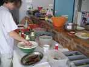
Mais le buffet a été pris d'assaut, il en reste quand même bien suffisamment, allez !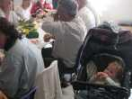
Valentin n'est pas le dernier à jouir du repas !